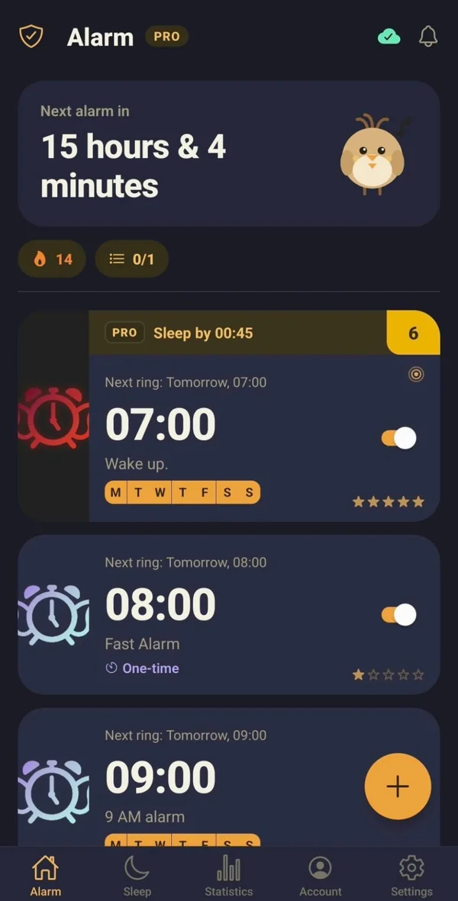
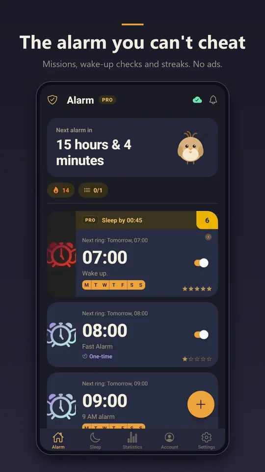
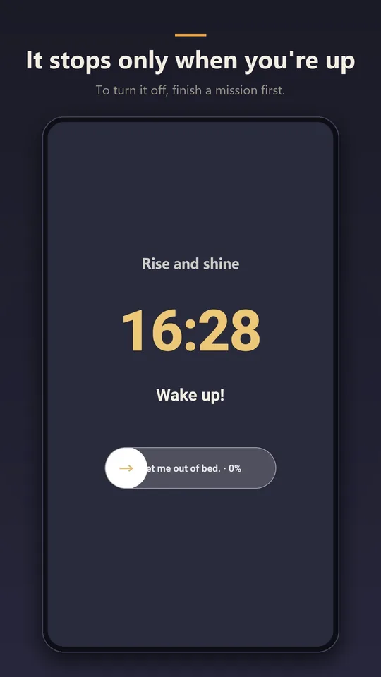
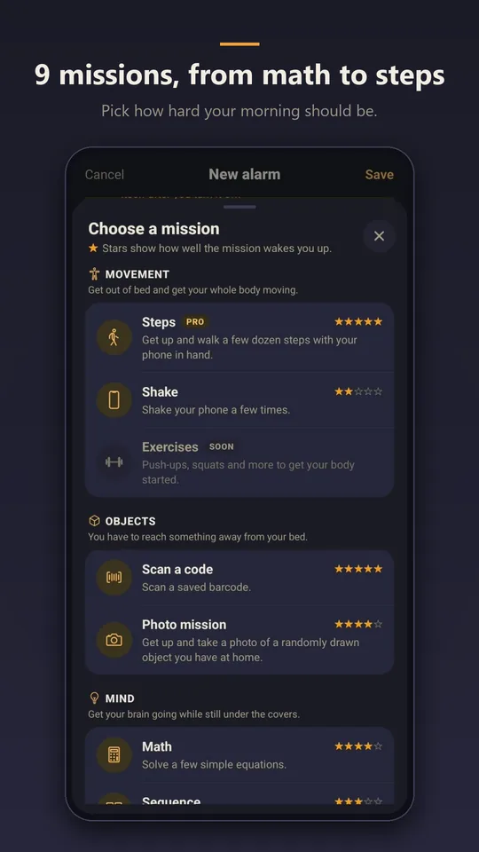
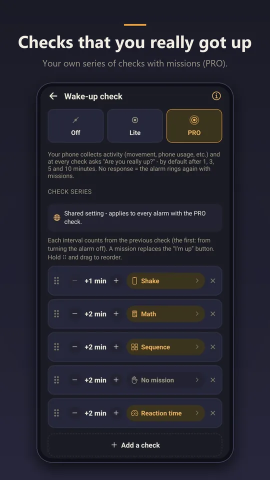
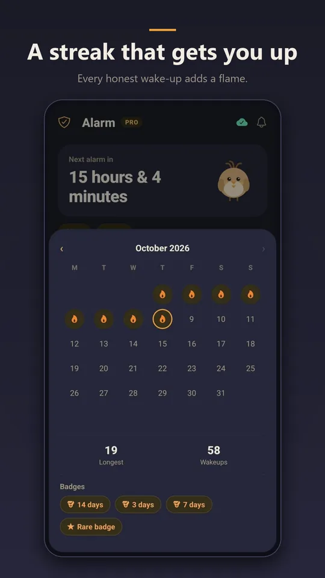
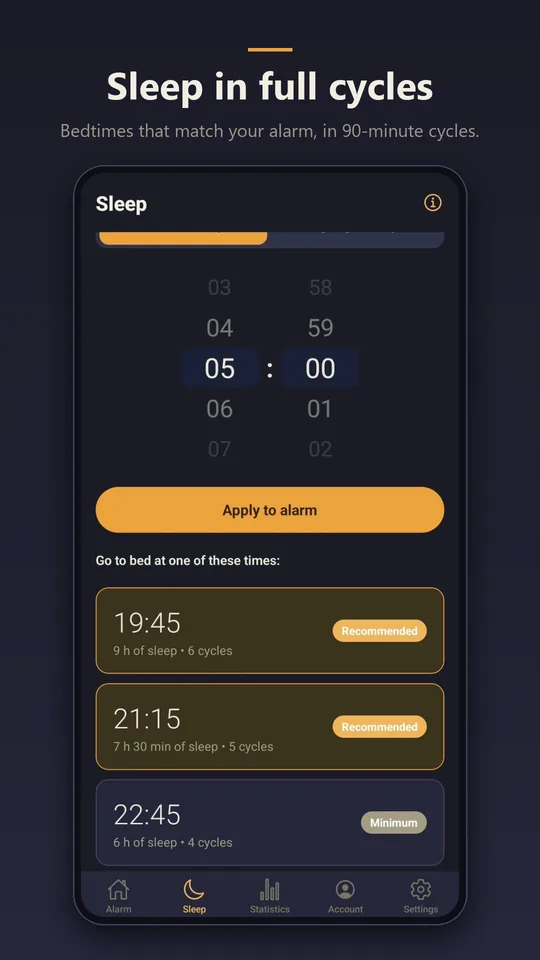

Wake-up check
Turning the alarm off isn't the end. Larky checks a few minutes later whether you're up and comes back if the phone is lying still. With PRO, build a series of up to six checks, each with its own mission.
Alarm for ADHD brains
Larky only stops once you finish a mission — and by then you're awake. A few minutes later it checks again whether you're really up.

Math, a sequence, the barcode on your coffee or a walk around the flat — pick whatever wakes you up.
The alarm keeps ringing until you're done. No silencing it with one swipe, eyes shut.
The wake-up check looks in a few minutes later. If the phone is lying still, the alarm comes back.






The alarm keeps ringing until you finish a mission. Pick the ones that wake you up:
Every mission has its own rounds and difficulty. Add three missions to an alarm, five with PRO, and save your favourite sets as templates.
Turning the alarm off isn't the end. Larky checks a few minutes later whether you're up and comes back if the phone is lying still. With PRO, build a series of up to six checks, each with its own mission.
Still no reaction a minute after full volume? Larky turns the sound to maximum, strengthens the vibration and flashes the torch.
Enter your wake-up time and the calculator finds a bedtime in 90-minute cycles — or the other way round. Deep Sleep (PRO) reminds you when to go to bed and guides you to sleep.
Every honest wake-up extends your streak. Badges reward persistence and every mission played — from the first to the three hundredth.
Once the alarm is off, Larky walks you through your own list: water, meds, stretching. One task at a time, with a countdown.
Set a duration or an end time, and a short daytime nap won't turn into three hours.
What time you really get up and how many snoozes a morning takes. The last week for free, a month and half a year with PRO.
Gradual volume, forced maximum, snooze limits, silence during missions and your own ringtones.
No time limit, no ads.
Everything in Free, plus:
Monthly, yearly (7 days free to start) or lifetime — one payment, no renewals. Payments go through Google Play, where you can cancel a subscription at any time.
Yes. The alarm, eight missions and the Lite wake-up check are free, with no time limit and no ads. PRO is optional.
No. Larky works fully without one. An account only helps when you switch phones.
Not yet — for now Larky is Android only.
They come back on their own: Larky sets them again once the phone restarts.
In the Google Play Store: profile icon → Payments & subscriptions → Subscriptions. PRO stays active until the end of the paid period.